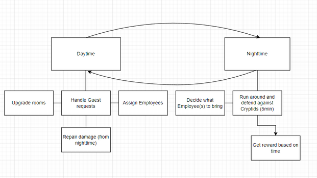
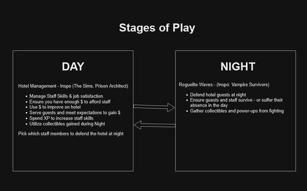

- Day/Night Loop: Built a gameplay loop where players manage resources during the day and survive waves at night. Used player feedback from playtests to refine stage pacing and intensity.
- Guest vs Staff Simulation: Designed simulation logic and encounter roles for characters using class types and job mechanics. Balanced stat curves based on role behavior.
- Enemy Design: Authored behavior patterns and class archetypes for enemy units, tuning them against player stats and ability progression.

Systems Design Doc
Enemy Behavior Doc
Economy & Progression
System Visuals
Time Loop

Guest vs Staff Roles

Stage Pacing

Game Loop Structure